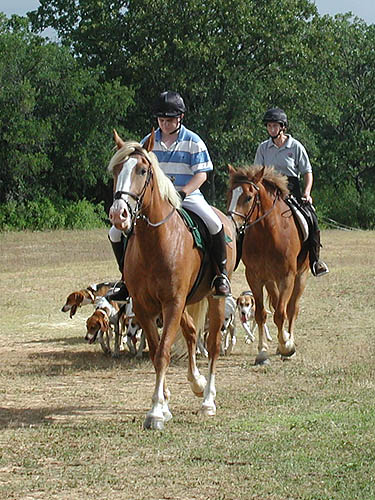
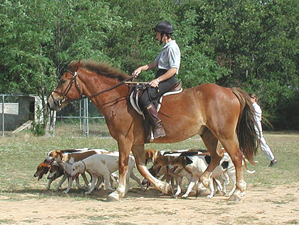
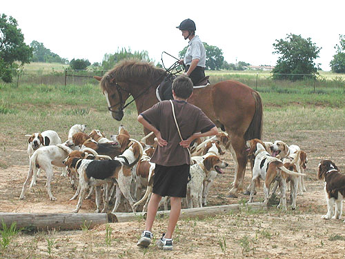
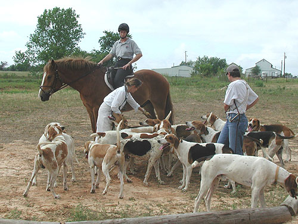
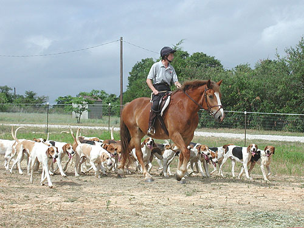
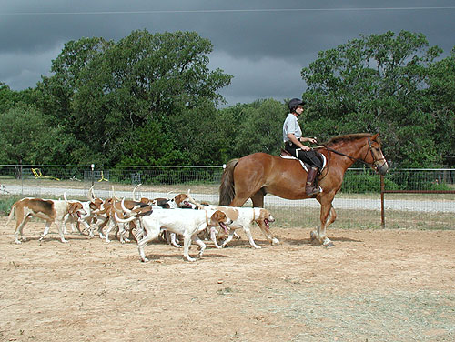
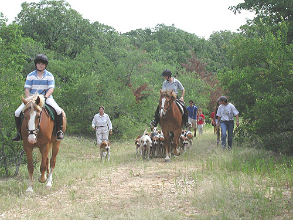
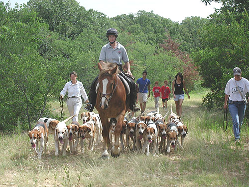

Thistle out Roading Chrissie is bringing Thistle
along to be her mount
for the upcoming hunt season.
He's learning quickly
and seems to enjoy his job.
We think by time he's hunted
a time or two, Chrissie
will only be along for the ride.

Yep, that's Angel out
front with Jake. They help Chrissie when she's roading, to keep the hounds
from breaking out of the pack.

Bringing the girls in.
Thistle can be an odd one. He doesn't pull to get back to the barn, but
pulls to leave it, and needs some urging to return.

Thistle is fine with
the hounds around and underneath him. He doesn't mind when one decides
to give him a lick on the nose.

He's not always patient,
but he's good when it comes to waiting for the hounds.

Taking the dog hounds
out. With Thistle's sense of adventure, we wonder what antics he'll think
up to entertain the field on slow days....

We got a bit of rain
a little later this day.

Again, Angel and Jake
leading the way. It's fun to see my former horses out and having fun.

Thistle knows when to
tell the hounds to 'steady back'. He knows when Chrissie is going to get
onto one, and tries to take care of it for her.